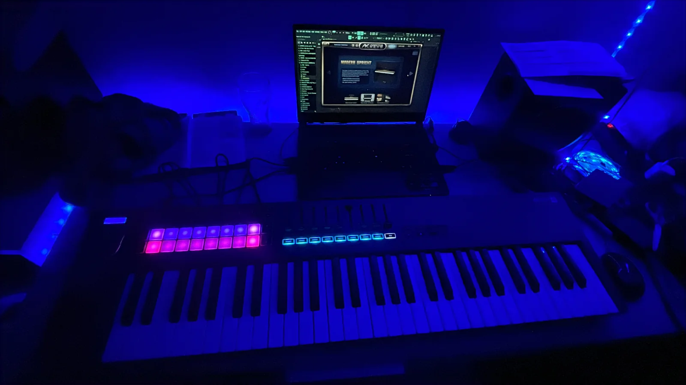

← Retour aux centres d’intérêt
Centre d’intérêt / Composition & production musicale
Bakerz Beatz
Composition et production de morceaux instrumentaux, entre expérimentation sonore, rythme et identité musicale.
Le contexte
La musique est un terrain de création où je développe des idées, construis des ambiances et travaille la cohérence d’un morceau.
Mon travail
- Composition et production de créations musicales sous le nom Bakerz Beatz, réalisées sur FL Studio.
- Exploration de différentes ambiances, structures et textures sonores.
- Recherche d’une identité musicale à travers les rythmes, les arrangements et les ambiances sonores.
Quelques productions
Une petite sélection de mes productions, présentée ici à titre d’exemple. Elle ne représente qu’une partie de mon travail de composition.
The Odyssey
Production construite à partir d’un sample de la bande originale du film The Odyssey.
2h42
Production originale Bakerz Beatz.
Univers visuel
Quelques images de mon espace de composition et de l’identité visuelle Bakerz Beatz.

